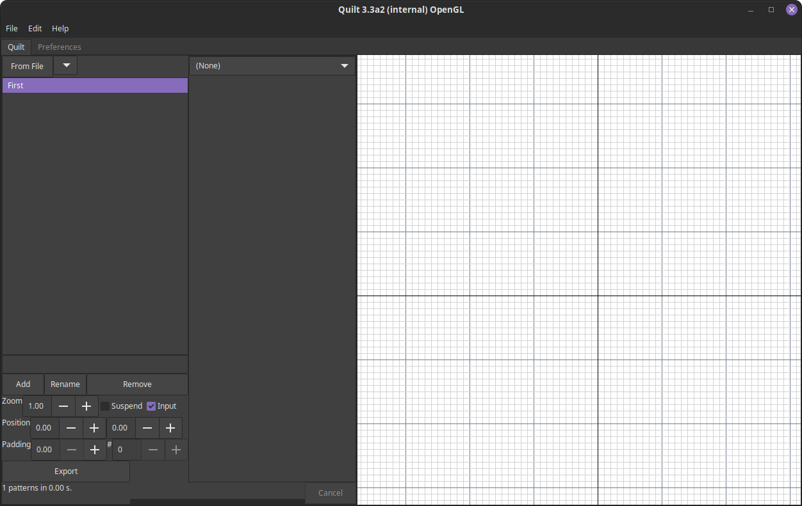
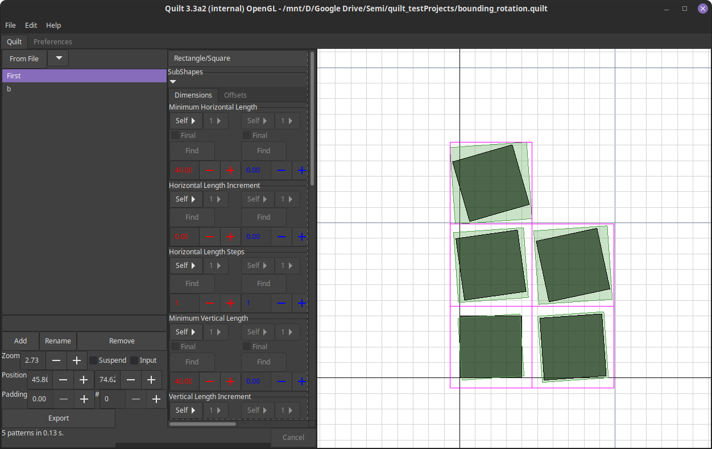
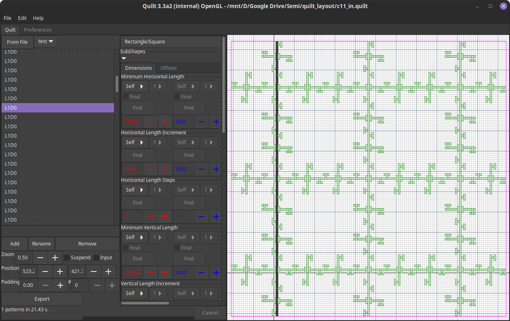

This is used to provide a UI from a common code-base for the tool. The images below are indicative of the user interface, with some notes about issues/limitations where applicable.
WPF
Known issues:
- None.
Mac
This platform is no longer supported due to lack of user interest and lack of hardware.
GTK
Known issues:
- The user interface under GTK has some large buttons and occasional layout refresh bugs that do not impair use of the tool. The actual look-and-feel comes from the theme, so the experience will differ across Fedora, Ubuntu, etc. based on the GTK theme being used.
- This has comparable performance to Windows (within 10%) following the move to use .NET Core 3.1.
- nVidia driver bugs cause the tool to crash on launch for OpenGL. Vulkan is fine. AMD and Intel hardware is not affected.
  